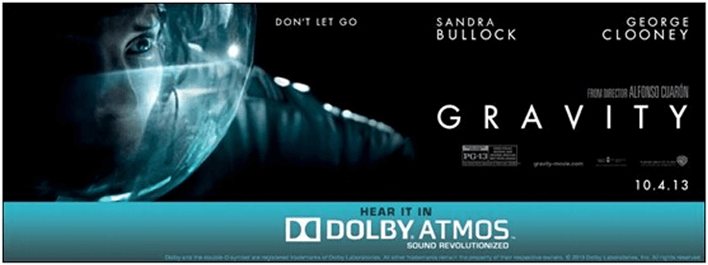
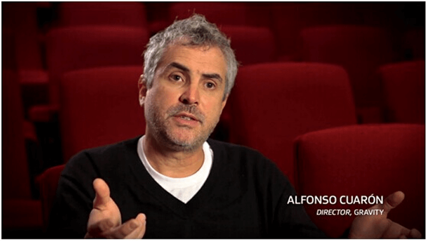
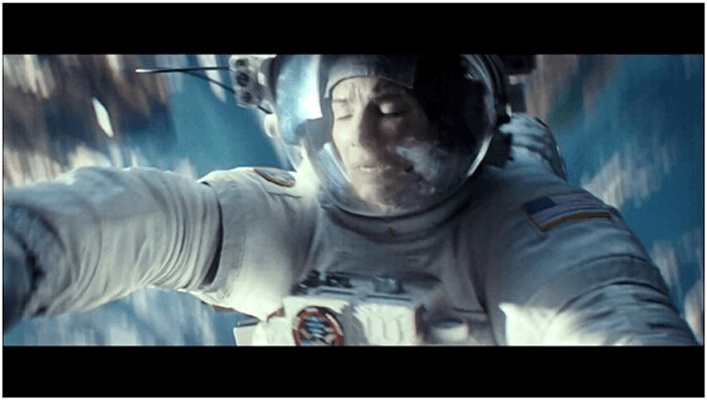
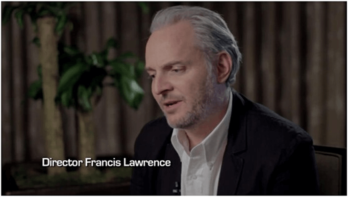
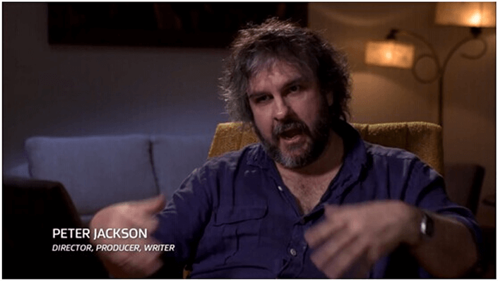
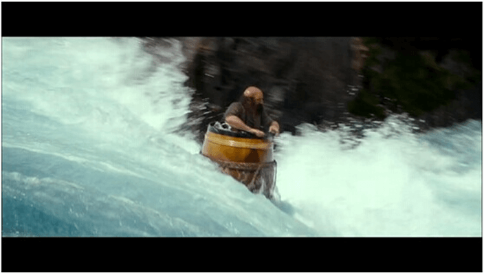

首页>业内新闻更新日期：2015-11-18
电影导演教你欣赏杜比全景声音效
《地心引力》

100多部采用杜比全景声技术制作的大片，全球650多家杜比全景声放映厅，相信你也曾几何时步入过某个全景声影院观看过某部全景声大片。也许您会说，感觉和普通影片没什么不一样嘛。。。那么，让大导演告诉你应该怎样欣赏全景声大片。
《地心引力》,导演：艾方索•柯朗

勇夺7项奥斯卡大奖，其中包括最佳音效剪辑，最佳配乐2项声效奖项。导演在接受采访时告诉了大家这部影片音效的一个与众不同的地方：太空里是没有声音的，声音无法通过真空传输。那么如何弥补缺失的电影音效呢?答案就是音乐，音乐也是与太空中的寂静最大的对比。于是宇航员在太空遇到状况，身体开始漂浮旋转的时候，耳边的配乐也开始随着画面360度旋转起来，而这就是杜比全景声最擅长的场景之一。

《饥饿游戏2，星火燎原

很巧，女主角和导演都姓劳伦斯。如果“大表姐“詹妮弗•劳伦斯的照片泄露再早一些的话，那么这部影片的票房会不会创新高呢？导演说道：这部影片的音效一直想给大家带来身临其境的感觉，但同时又怕刻意营造这种气氛过于突兀。所以影片中大量的丛林场景就成为了全景声最好的用武之地，声音从各个维度包围着你，毒雾来袭，猴子追杀，这些场景的音效无不使你觉得真正置身于那个危险的丛林之中。
《霍比特人2：史矛革之战》
这个新西兰大胡子鬼才导演的上一个三部曲《指环王》获得了共获得30个奥斯卡奖项提名，最后收获了17座小金人。如果他想在和《霍比特人》上也获得同样的辉煌的话，那么他就要在最后一部上加把劲了。不管怎样，《霍比特人》全球大卖的票房是不争的事实。而且在今年的奥斯卡上也获得了包括2项音效奖项在内的3项提名。彼得在采访的时候也一再强调，《霍比特人2》的音轨是非常非常复杂的，包含了太多的信息，而且制作精良，Academy肯定也认可了这一点，否则也不会获得奥斯卡提名。。。提名。。。提名（看来大胡子还是很在意这个的）。看看大导演是怎么说的：我最满意的是那些”安静”的时刻，通过杜比全景声创造出的风声，背景声，感觉将你包围其中。谈到场景，那么矮人们在酒桶中漂流而下逃过兽人追杀的这一幕是展示音效的绝佳范例。河流在你耳边奔流，兽人和精灵在头顶越过，各个扬声器中发出不同的声音，共同营造出无敌的空间感，感觉你就是影片中酒桶中的那个矮人。
《霍比特人2：史矛革之战》，导演:彼得•杰克逊

什么，你觉得推荐晚了，影片已经下线了。没关系，那么就去选购一套支持杜比全景声的家庭影院吧。随着2014年8月ONKYO安桥宣布将杜比全景声技术引入家庭影院功放产品，以后在家中也可以欣赏到从头顶包围到四周的真3D音效了，这样想看哪一段就跳到哪一段。如果家中已有家庭影院，通过简单的设置即可将现有家庭影院系统升级至最新的杜比全景声影院。只要买一台支持杜比全景声的功放，如安桥TX-NR636/TX-NR737/TX-NR838，以及一对安桥SKH-410杜比认证全景声专用扬声器，就可立即将家中的5.1声道影院升级至5.1.2声道的杜比全景声影院，SKH-410扬声器通过仰角式设计，将顶部的声音通过房顶反射的方式传至观众的耳中。
怎么样？是不是也想把自己的影院变成浩瀚的宇宙、恐怖的丛林？又或是霍比特人的奇异旅程？入手一台杜比全景声功放吧！温习一下这些经典电影的精彩片段，感受一下过去没有体验过的出色音效。杜比全景声必将是2014年家庭影院产品的最热门关键词之一，期待更多产品的到来。
